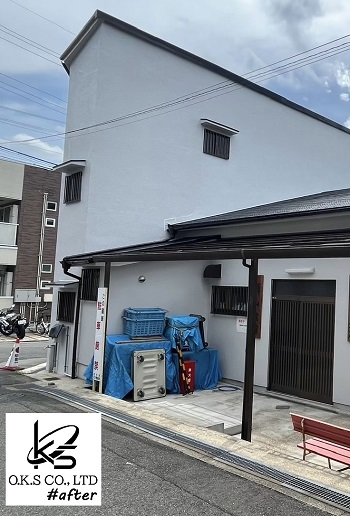
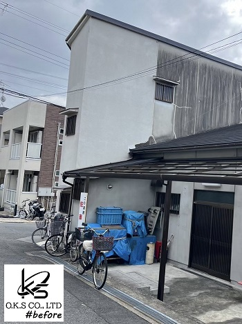
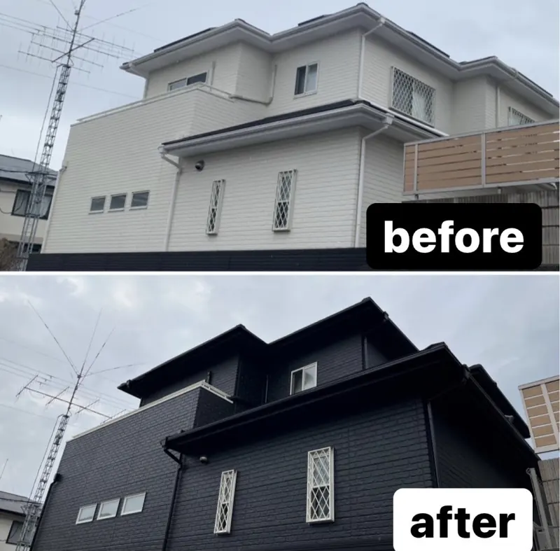
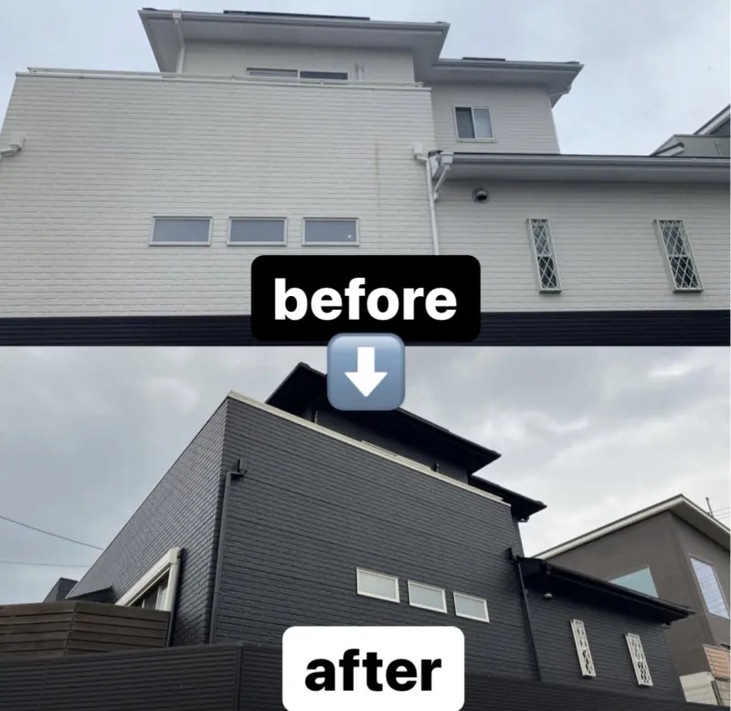

PROJECT
日焼けや汚れが目立つ外壁を、黒を基調に一新。
日焼けや汚れが目立っていた外壁を全面塗装しました。外壁を黒で仕上げるとともに、雨樋も黒で統一することで建物全体に一体感を持たせています。
白系のサッシとのコントラストにより輪郭がはっきりし、外観に奥行きと立体感が生まれました。既存住宅の印象を大きく変えた外装リフォーム事例です。
- CATEGORY
- 外壁・屋根
- WORKS
- 外壁塗装
- POINT
- 外観・統一感・建物保護
BEFORE / AFTER
施工前後を比較
外壁
日焼けや汚れが目立っていた外壁を全面塗装し、黒を基調とした引き締まった外観へ整えました。

GALLERY
外観全体の変化
建物全体を別角度から見た施工前後です。白を基調とした外観から、黒を基調とした引き締まった印象へ大きく変化しました。


CONTACT